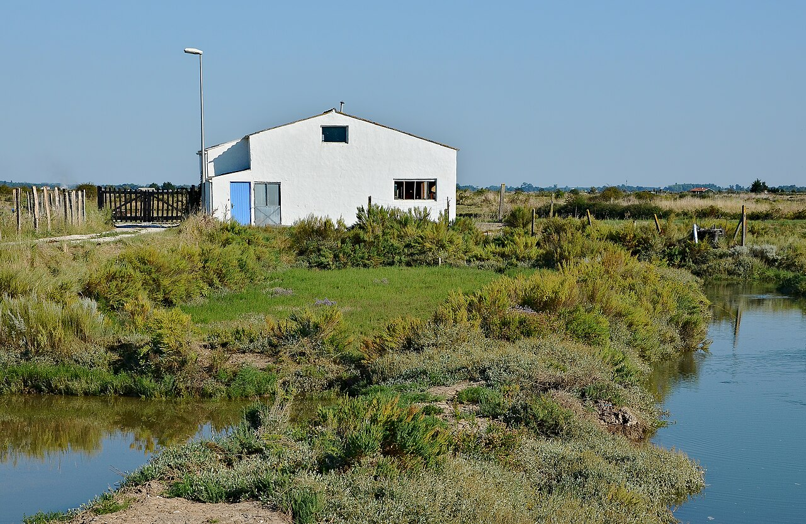

Flâner entre les maisons et les ateliers
Commencez par une promenade paisible dans le village classé parmi les Plus Beaux Villages de France. Au fil des ruelles blanchies à la chaux, découvrez les ateliers de potiers, peintres, créateurs de bijoux et sauniers. Prenez le temps d'échanger avec ces passionnés.
Rejoindre le port ostréicole
Dirigez-vous vers le port pour vous immerger dans l’ambiance pittoresque des claires et des marais de la Seudre. Le paysage se transforme au gré des marées. Observez les chalands et les cabanes colorées depuis les passerelles publiques.

Photo : Patrick Despoix · CC BY-SA 3.0 (Cadrage adapté)
Prévoir une pause gourmande
Si vous aimez les fruits de mer, installez-vous sur une terrasse au bord de l'eau pour une dégustation d’huîtres Marennes-Oléron affinées en claires, accompagnées de pain de seigle, de beurre des Charentes et d'un verre de vin blanc local.
Explorer les marais à son rythme
Un sentier balisé permet de faire le tour des marais salants et d'observer les oiseaux migrateurs (aigrettes, hérons, chevaliers). Pour une expérience aquatique, des balades en kayak de mer ou en paddle sont organisées selon les marées.
Avant de partir
Emportez de l’eau et une protection solaire pour les parties de sentiers exposées. Vérifiez les jours d’ouverture des ateliers et des cabanes de dégustation, particulièrement hors haute saison.
Pour préparer votre sortie : Royan Atlantique — Mornac-sur-Seudre ↗. Renseignez-vous auprès de l'office de tourisme pour les animations du moment.